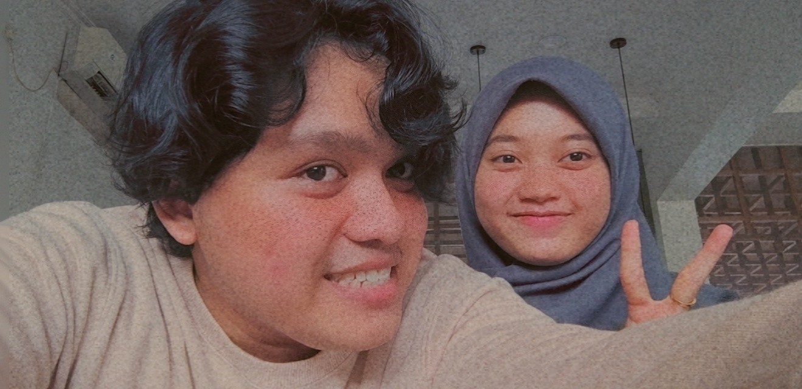

Konten 1
Konten 1 adalah salah satu foto kita ketika sushi date.

Konten 1 adalah salah satu foto kita ketika sushi date.
Konten 2 bercerita tentang dimana kita bingung mau makan apa dan pada akhirnya aku memutuskan untuk makan sushi.
Konten 3 bercerita tentang kita yang memesan ramen tapi ternyata rasanya tak jauh beda dengan mie ayam.
Konten 4 adalah salah satu foto kita sepulang wisuda.
Konten 5 bercerita tentang kita yang tidak mendapat studio foto untuk melakukan photoshoot sebagai kenangan kelulusan dan memilih melakukan photoshoot sendiri.
Konten 6 bercerita tentang kita yang menemukan sebuah tempat photoshoot yaitu bukit kapur yang sangat indah.